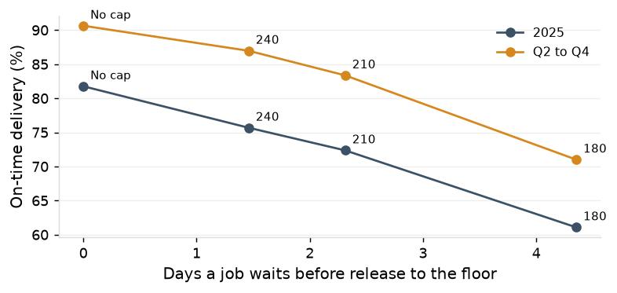
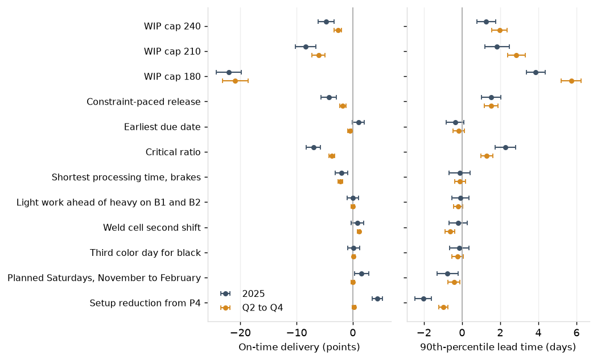

The model of current practice is within tolerance on 9 of 10 measures. It replays the 2024 year-end build and clears it sooner than the shop did: first-quarter on-time delivery is 59.2% in the model against 40.8% measured, and every other quarter is within 2.5 points. Effects on the first-quarter event are therefore lower bounds. The model's brakes run 2 points hotter than measured (0.933 against 0.912), so the effects of capacity levers in the ordinary quarters are slightly overstated.
| Period | Measure | Measured | Model | 95% interval | Difference | Tolerance | Result |
|---|---|---|---|---|---|---|---|
| 2025 | Median lead time | 11.2 | 10.5 | 10.3 to 10.6 | -6.5% | within 10% | within |
| 2025 | 90th-percentile lead time | 25.2 | 23.0 | 22.6 to 23.4 | -8.7% | reported | |
| 2025 | Mean WIP | 253 | 234 | 232 to 236 | -7.3% | within 10% | within |
| 2025 | Brake utilization | 0.912 | 0.933 | 0.931 to 0.935 | +2.1 points | within 3 points | within |
| 2025 | Robotic weld utilization | 0.826 | 0.849 | 0.845 to 0.854 | +2.4 points | within 3 points | within |
| 2025 | On time | 76.6% | 81.8% | 81.0% to 82.6% | +5.1 points | within 3 points | outside |
| 2025 | Jobs shipped | 5,245 | 5,230 | 5,224 to 5,237 | -0.3% | reported | |
| 2025 Q2 to Q4 | Median lead time | 9.2 | 9.0 | 8.9 to 9.2 | -2.2% | within 10% | within |
| 2025 Q2 to Q4 | 90th-percentile lead time | 18.2 | 17.0 | 16.8 to 17.2 | -6.7% | reported | |
| 2025 Q2 to Q4 | Mean WIP | 209 | 196 | 195 to 198 | -5.9% | within 10% | within |
| 2025 Q2 to Q4 | Brake utilization | 0.908 | 0.921 | 0.918 to 0.923 | +1.2 points | within 3 points | within |
| 2025 Q2 to Q4 | Robotic weld utilization | 0.834 | 0.850 | 0.845 to 0.854 | +1.5 points | within 3 points | within |
| 2025 Q2 to Q4 | On time | 90.1% | 90.6% | 90.5% to 90.8% | +0.6 points | within 3 points | within |
| 2025 Q2 to Q4 | Jobs shipped | 3,815 | 3,782 | 3,774 to 3,791 | -0.9% | reported |
A WIP cap at 240, 210 and 180 jobs lowers on-time delivery by 3.7, 7.3 and 19.6 points in Q2 to Q4 (6.1, 9.4 and 20.7 for the year) and lengthens the 90th-percentile lead time by 2.3 to 5.5 days; jobs wait 1.5 to 4.4 days at the gate. Constraint-paced release is 1.5 points worse in Q2 to Q4. In an ordinary quarter the floor already carries less WIP than the quoted lead times allow (P1); a cap delays work the floor could have started.

Earliest due date makes no difference for the year, +1.0 points (-0.2 to +2.1), is 0.6 points worse in Q2 to Q4 and ships 21 fewer jobs. Critical ratio is 3.9 to 7.5 points worse. Shortest processing time at the brakes shortens the median and is 1.0 to 2.2 points worse on time, with 29 fewer jobs shipped in the year. The dispatch list with rush and hot-list precedence is as good as any rule tested.
The setup reduction from P4 raises on-time delivery by 4.3 points (3.4 to 5.3) for the year, shortens the 90th percentile by 2.1 days, lowers WIP by 19 jobs and cuts Saturday shifts from 17 to 11 and extended hours from 101 to 51. In Q2 to Q4 it shortens the 90th percentile by 0.9 days and leaves on-time delivery unchanged, +0.2 points (-0.1 to +0.5): lateness in those quarters is set by the promise (P2).

A second shift on the robotic weld cell raises on-time delivery by 0.8 points (0.5 to 1.0) in Q2 to Q4 and 1.2 for the year, and shortens the 90th percentile by 0.4 days in Q2 to Q4.
A planned Saturday brake shift every week from November through February raises on-time delivery by 1.8 points (0.6 to 2.9) for the year and shortens the 90th percentile by 0.8 days, for 4.1 more Saturday shifts in 2025 than the queue-triggered practice produced. This is a lower bound.
Light work ahead of heavy on B1 and B2, +0.1 points (-1.0 to +1.1) for the year, and a third weekly color day for black, +0.9 points (-0.1 to +1.8), do not move on-time delivery or the 90th percentile beyond their intervals.
Promising non-rush lines at the 80th percentile of the routing class's lead time over the trailing 13 weeks raises on-time delivery 3.6 points for the year and 1.9 in Q2 to Q4 without touching the floor, and makes 83% to 86% of non-rush promises longer than the fixed quote. The rule goes to P7.
Setup reduction with the weld cell's second shift raises on-time delivery by 1.1 points (0.9 to 1.3) in Q2 to Q4 and 4.9 points (4.0 to 5.8) for the year. Adding planned Saturdays from November through February takes the year to 88.4% on time, up 6.6 points (5.7 to 7.4), with a 90th percentile of 19.8 days against 23.0; Q2 to Q4 reaches 91.9% and 15.3 days. The three effects are close to additive: the levers alone sum to +7.3 points for the year against +6.6 for the package. In Q2 to Q4 the gain is the weld cell's second shift; planned Saturdays add 0.1 points there. Setup reduction and the packages ship 41 to 50 fewer jobs in Q2 to Q4 and the same number for the year; the first-quarter backlog ships earlier. At the load-aware promise the same floor delivers 88.9% on time for the year and 92.9% in Q2 to Q4.
| Package | On time | Against current practice (points) | Against setup reduction (points) | 90th-percentile lead time | Against current practice (days) | Against setup reduction (days) | Mean WIP | Saturday shifts | Extended hours |
|---|---|---|---|---|---|---|---|---|---|
| Current practice | 81.8% | 23.0 | 234 | 16.6 | 101 | ||||
| Setup reduction alone | 86.1% | +4.3 (+3.4 to +5.3) | 20.9 | -2.1 (-2.5 to -1.7) | 215 | 11.4 | 51 | ||
| Chronic package: setup reduction + weld cell second shift | 86.7% | +4.9 (+4.0 to +5.8) | +0.5 (-0.2 to +1.3) | 20.8 | -2.2 (-2.7 to -1.8) | -0.1 (-0.5 to +0.2) | 213 | 11.9 | 59 |
| No-capital package: + planned Saturdays, November to February | 88.4% | +6.6 (+5.7 to +7.4) | +2.2 (+1.6 to +2.9) | 19.8 | -3.3 (-3.7 to -2.9) | -1.2 (-1.5 to -0.8) | 206 | 18.9 | 39 |
| No-capital package at the load-aware promise | 88.9% | +7.1 (+6.3 to +7.9) |
| Package | On time | Against current practice (points) | Against setup reduction (points) | 90th-percentile lead time | Against current practice (days) | Against setup reduction (days) | Mean WIP | Saturday shifts | Extended hours |
|---|---|---|---|---|---|---|---|---|---|
| Current practice | 90.6% | 17.0 | 196 | 5.2 | 5 | ||||
| Setup reduction alone | 90.8% | +0.2 (-0.1 to +0.5) | 16.1 | -0.9 (-1.1 to -0.6) | 187 | 4.1 | 0 | ||
| Chronic package: setup reduction + weld cell second shift | 91.8% | +1.1 (+0.9 to +1.3) | +0.9 (+0.7 to +1.1) | 15.6 | -1.3 (-1.6 to -1.1) | -0.5 (-0.7 to -0.2) | 183 | 3.8 | 2 |
| No-capital package: + planned Saturdays, November to February | 91.9% | +1.2 (+1.0 to +1.5) | +1.0 (+0.8 to +1.3) | 15.3 | -1.7 (-1.9 to -1.5) | -0.8 (-1.0 to -0.6) | 181 | 9.3 | 0 |
| No-capital package at the load-aware promise | 92.9% | +2.3 (+2.0 to +2.5) |
Do not cap release, and keep the dispatch list. Take the P4 setup program, a second shift on the robotic weld cell and planned Saturday brake shifts from November through February as the operating package: on-time delivery is expected to rise by 6.6 points (5.7 to 7.4) for the year and 1.2 points (1.0 to 1.5) in Q2 to Q4, with the 90th-percentile lead time 3.3 and 1.7 days shorter. Restate quoted lead times (P7). P8 compares this package with the capital options on the same measures.
The model replays the jobs released from January 2024 with their routings, standards, promised dates, rush flags and planned operation dates, each machine's shift calendar and recorded downtime, and the powder color schedule. Setup and run times are drawn from 2025 actual-over-standard ratios of operations of similar standard hours at the same work center (brake setups by grouping and lot size, laser run time by machine); material wait, move and recorded hold, outside processing and complete-to-ship times from their 2025 distributions.
Practice modeled: traveler print the next working morning; dispatch by rush, hot list, planned operation start, arrival; the daily dispatch list at the five single-shift work centers; precision first on B1 and B2, the list on B3 and B4, light work on B5, rush and hot-list jobs on any capable brake; same-tooling grouping up to three in a row; a second operator on heavy setups; Saturday and extended brake shifts on B1 and B2 for enclosure and rush work.
Three parameters are estimated from the records: the share of crewed brake hours worked when the queue never empties (0.967), and the frequency of Saturday and of extended brake shifts by the number of jobs at the brakes. Nest-fill is approximated: a laser job issued one sheet waits for a second job on the sheet item or for two working days before its planned start; blank area is not in the records.
Scenarios: the WIP cap holds non-rush jobs in release order until the jobs on the floor are below the cap, and lead time still runs from the release date; constraint-paced release holds jobs with brake work while the work waiting at the brakes exceeds 3 days of crewed brake capacity; light work goes ahead of heavy on B1 and B2, after precision, when the B3 to B5 queue exceeds 2 days; the setup reduction runs the top 12 part-operations at standard and takes the assignment and handover hours off the other brake setups in proportion, the model having no individual operators. The release hold is from a second set of 30 replications of the release-control scenarios. Differences are paired by replication; throughput is flagged where a scenario ships fewer jobs in the period with the interval excluding zero.
| Quarter shipped | Jobs shipped, measured | Jobs shipped, model | On time, measured | On time, model | Median lead time, measured | Median lead time, model |
|---|---|---|---|---|---|---|
| 2024 Q3 | 1,056 | 1,052 | 90.1% | 90.1% | 8.2 | 8.3 |
| 2024 Q4 | 1,174 | 1,222 | 87.7% | 85.8% | 10.2 | 10.5 |
| 2025 Q1 | 1,430 | 1,450 | 40.8% | 59.2% | 20.2 | 18.6 |
| 2025 Q2 | 1,363 | 1,317 | 89.3% | 91.7% | 11.2 | 9.2 |
| 2025 Q3 | 1,192 | 1,200 | 89.5% | 88.9% | 8.2 | 8.2 |
| 2025 Q4 | 1,260 | 1,260 | 91.4% | 90.7% | 9.2 | 9.2 |
| Scenario | Median lead time | 90th-percentile lead time | On time | Mean WIP | Brake utilization | Robotic weld utilization | Saturday shifts | Extended hours | Jobs shipped |
|---|---|---|---|---|---|---|---|---|---|
| Current practice | 10.5 (10.3 to 10.6) | 23.0 (22.6 to 23.4) | 81.8% (81.0% to 82.6%) | 234 (232 to 236) | 0.933 (0.931 to 0.935) | 0.849 (0.845 to 0.854) | 16.6 (15.7 to 17.5) | 101 (94 to 108) | 5,230 (5,224 to 5,237) |
| WIP cap 240 | 11.9 (11.7 to 12.2) | 24.8 (24.3 to 25.2) | 75.7% (74.4% to 76.9%) | 257 (253 to 260) | 0.942 (0.940 to 0.944) | 0.852 (0.847 to 0.857) | 12.3 (11.2 to 13.4) | 7 (4 to 9) | 5,225 (5,220 to 5,231) |
| WIP cap 210 | 12.7 (12.5 to 12.9) | 25.1 (24.7 to 25.6) | 72.4% (70.8% to 74.0%) | 267 (262 to 271) | 0.948 (0.946 to 0.949) | 0.858 (0.854 to 0.863) | 7.1 (6.2 to 8.0) | 0 (0 to 0) | 5,229 (5,224 to 5,234) |
| WIP cap 180 | 15.2 (14.8 to 15.7) | 26.5 (26.1 to 26.9) | 61.1% (58.8% to 63.4%) | 308 (301 to 315) | 0.949 (0.948 to 0.950) | 0.847 (0.843 to 0.850) | 5.3 (4.6 to 6.0) | 0 (0 to 0) | 5,200 (5,190 to 5,210) |
| Constraint-paced release | 11.3 (11.1 to 11.5) | 24.3 (23.9 to 24.7) | 78.4% (77.3% to 79.5%) | 248 (245 to 251) | 0.938 (0.936 to 0.940) | 0.849 (0.845 to 0.853) | 15.0 (13.9 to 16.1) | 43 (39 to 48) | 5,224 (5,218 to 5,231) |
| Earliest due date | 10.2 (10.0 to 10.4) | 22.8 (22.5 to 23.2) | 82.7% (82.0% to 83.4%) | 228 (225 to 230) | 0.933 (0.931 to 0.935) | 0.855 (0.851 to 0.859) | 16.1 (15.5 to 16.7) | 99 (91 to 106) | 5,210 (5,203 to 5,217) |
| Critical ratio | 11.4 (11.2 to 11.5) | 25.4 (25.1 to 25.8) | 74.3% (73.4% to 75.2%) | 253 (251 to 256) | 0.931 (0.929 to 0.932) | 0.852 (0.848 to 0.856) | 19.0 (18.1 to 20.0) | 129 (123 to 136) | 5,221 (5,215 to 5,227) |
| Shortest processing time, brakes | 10.1 (10.0 to 10.2) | 22.4 (22.2 to 22.7) | 80.8% (80.4% to 81.2%) | 226 (224 to 227) | 0.937 (0.935 to 0.939) | 0.856 (0.852 to 0.860) | 15.1 (14.2 to 16.1) | 72 (65 to 80) | 5,202 (5,195 to 5,208) |
| Light work ahead of heavy on B1 and B2 | 10.5 (10.3 to 10.6) | 23.1 (22.8 to 23.4) | 81.8% (81.1% to 82.6%) | 233 (232 to 235) | 0.931 (0.930 to 0.932) | 0.848 (0.844 to 0.852) | 16.5 (15.9 to 17.2) | 102 (96 to 109) | 5,233 (5,226 to 5,240) |
| Weld cell second shift | 10.3 (10.2 to 10.5) | 22.7 (22.3 to 23.0) | 83.0% (82.2% to 83.7%) | 230 (227 to 232) | 0.932 (0.931 to 0.934) | 0.411 (0.410 to 0.413) | 17.1 (16.2 to 18.0) | 109 (101 to 117) | 5,227 (5,219 to 5,234) |
| Third color day for black | 10.5 (10.3 to 10.7) | 22.8 (22.5 to 23.1) | 82.6% (82.0% to 83.2%) | 232 (230 to 234) | 0.931 (0.929 to 0.932) | 0.848 (0.844 to 0.852) | 17.0 (16.3 to 17.8) | 106 (99 to 113) | 5,220 (5,215 to 5,226) |
| Planned Saturdays, November to February | 10.3 (10.2 to 10.4) | 22.2 (21.9 to 22.5) | 83.5% (82.8% to 84.2%) | 227 (225 to 229) | 0.930 (0.929 to 0.932) | 0.848 (0.844 to 0.852) | 20.7 (20.1 to 21.3) | 89 (79 to 98) | 5,232 (5,225 to 5,238) |
| Setup reduction from P4 | 9.8 (9.6 to 10.0) | 20.9 (20.7 to 21.2) | 86.1% (85.6% to 86.6%) | 215 (214 to 217) | 0.904 (0.902 to 0.906) | 0.851 (0.845 to 0.856) | 11.4 (10.5 to 12.4) | 51 (46 to 56) | 5,233 (5,227 to 5,240) |
| Chronic package: setup reduction + weld cell second shift | 9.6 (9.4 to 9.8) | 20.8 (20.6 to 21.0) | 86.7% (86.2% to 87.1%) | 213 (212 to 214) | 0.906 (0.904 to 0.908) | 0.410 (0.409 to 0.412) | 11.9 (11.1 to 12.7) | 59 (51 to 66) | 5,236 (5,229 to 5,244) |
| No-capital package: + planned Saturdays, November to February | 9.2 (9.2 to 9.3) | 19.8 (19.5 to 20.0) | 88.4% (87.9% to 88.8%) | 206 (204 to 208) | 0.903 (0.901 to 0.905) | 0.412 (0.410 to 0.414) | 18.9 (18.4 to 19.4) | 39 (34 to 44) | 5,235 (5,229 to 5,241) |
| WIP cap 240 + earliest due date | 11.4 (11.2 to 11.6) | 24.7 (24.3 to 25.1) | 77.1% (75.9% to 78.4%) | 249 (245 to 253) | 0.942 (0.939 to 0.944) | 0.856 (0.851 to 0.860) | 12.0 (11.0 to 13.0) | 6 (4 to 8) | 5,212 (5,206 to 5,217) |
| WIP cap 240 + earliest due date + weld second shift | 11.2 (11.0 to 11.4) | 24.4 (24.0 to 24.8) | 78.3% (77.2% to 79.4%) | 246 (243 to 249) | 0.941 (0.940 to 0.943) | 0.416 (0.413 to 0.418) | 12.4 (11.3 to 13.5) | 5 (3 to 7) | 5,211 (5,203 to 5,218) |
| Planned Saturdays + light work on B1 and B2 | 10.4 (10.3 to 10.6) | 22.5 (22.2 to 22.8) | 82.7% (81.9% to 83.4%) | 230 (227 to 232) | 0.932 (0.929 to 0.934) | 0.851 (0.848 to 0.855) | 21.6 (20.8 to 22.4) | 95 (87 to 103) | 5,236 (5,228 to 5,244) |
| WIP cap 240 + earliest due date + weld second shift + setup reduction | 9.6 (9.4 to 9.8) | 20.9 (20.6 to 21.2) | 85.6% (84.9% to 86.2%) | 215 (212 to 217) | 0.911 (0.909 to 0.913) | 0.419 (0.416 to 0.422) | 8.2 (7.3 to 9.1) | 1 (0 to 2) | 5,209 (5,202 to 5,216) |
| Scenario | Median lead time (days) | 90th-percentile lead time (days) | On time (points) | Mean WIP (jobs) | Jobs shipped | Throughput |
|---|---|---|---|---|---|---|
| WIP cap 240 | +1.5 (+1.2 to +1.7) | +1.8 (+1.2 to +2.4) | -6.1 (-7.7 to -4.4) | +23 (+18 to +27) | -5 (-12 to +2) | holds |
| WIP cap 210 | +2.2 (+2.0 to +2.5) | +2.1 (+1.5 to +2.7) | -9.4 (-11.3 to -7.5) | +33 (+27 to +38) | -1 (-9 to +7) | holds |
| WIP cap 180 | +4.8 (+4.3 to +5.2) | +3.5 (+3.0 to +4.0) | -20.7 (-22.9 to -18.4) | +73 (+66 to +80) | -31 (-40 to -21) | fewer |
| Constraint-paced release | +0.8 (+0.6 to +1.1) | +1.3 (+0.8 to +1.7) | -3.4 (-4.6 to -2.2) | +14 (+10 to +18) | -6 (-14 to +2) | holds |
| Earliest due date | -0.3 (-0.6 to -0.0) | -0.2 (-0.7 to +0.4) | +1.0 (-0.2 to +2.1) | -6 (-10 to -2) | -21 (-32 to -10) | fewer |
| Critical ratio | +0.9 (+0.7 to +1.1) | +2.4 (+1.8 to +2.9) | -7.5 (-8.7 to -6.3) | +19 (+15 to +23) | -9 (-18 to -0) | fewer |
| Shortest processing time, brakes | -0.4 (-0.5 to -0.2) | -0.6 (-1.1 to -0.1) | -1.0 (-1.9 to -0.0) | -9 (-11 to -6) | -29 (-38 to -20) | fewer |
| Light work ahead of heavy on B1 and B2 | -0.0 (-0.2 to +0.2) | +0.1 (-0.4 to +0.6) | +0.1 (-1.0 to +1.1) | -1 (-4 to +2) | +2 (-8 to +13) | holds |
| Weld cell second shift | -0.1 (-0.3 to +0.0) | -0.3 (-0.7 to +0.1) | +1.2 (+0.2 to +2.2) | -4 (-7 to -2) | -4 (-15 to +7) | holds |
| Third color day for black | +0.0 (-0.2 to +0.3) | -0.2 (-0.7 to +0.2) | +0.9 (-0.1 to +1.8) | -2 (-5 to +1) | -10 (-20 to -0) | fewer |
| Planned Saturdays, November to February | -0.2 (-0.4 to -0.0) | -0.8 (-1.4 to -0.3) | +1.8 (+0.6 to +2.9) | -7 (-10 to -4) | +1 (-10 to +12) | holds |
| Setup reduction from P4 | -0.7 (-0.9 to -0.4) | -2.1 (-2.5 to -1.7) | +4.3 (+3.4 to +5.3) | -19 (-21 to -16) | +3 (-6 to +12) | holds |
| Chronic package: setup reduction + weld cell second shift | -0.9 (-1.2 to -0.6) | -2.2 (-2.7 to -1.8) | +4.9 (+4.0 to +5.8) | -21 (-24 to -19) | +6 (-5 to +17) | holds |
| No-capital package: + planned Saturdays, November to February | -1.2 (-1.4 to -1.1) | -3.3 (-3.7 to -2.9) | +6.6 (+5.7 to +7.4) | -28 (-31 to -26) | +5 (-4 to +13) | holds |
| WIP cap 240 + earliest due date | +0.9 (+0.7 to +1.2) | +1.7 (+1.2 to +2.2) | -4.6 (-6.0 to -3.3) | +15 (+11 to +19) | -19 (-28 to -10) | fewer |
| WIP cap 240 + earliest due date + weld second shift | +0.7 (+0.5 to +0.9) | +1.4 (+0.9 to +1.9) | -3.5 (-4.7 to -2.3) | +12 (+9 to +15) | -20 (-30 to -9) | fewer |
| Planned Saturdays + light work on B1 and B2 | -0.1 (-0.2 to +0.1) | -0.5 (-1.0 to -0.1) | +0.9 (-0.2 to +2.0) | -5 (-8 to -2) | +5 (-7 to +18) | holds |
| WIP cap 240 + earliest due date + weld second shift + setup reduction | -0.9 (-1.1 to -0.6) | -2.1 (-2.6 to -1.6) | +3.8 (+2.8 to +4.9) | -20 (-23 to -16) | -21 (-31 to -12) | fewer |
| Scenario | Median lead time | 90th-percentile lead time | On time | Mean WIP | Brake utilization | Robotic weld utilization | Saturday shifts | Extended hours | Jobs shipped |
|---|---|---|---|---|---|---|---|---|---|
| Current practice | 9.0 (8.9 to 9.2) | 17.0 (16.8 to 17.2) | 90.6% (90.5% to 90.8%) | 196 (195 to 198) | 0.921 (0.918 to 0.923) | 0.850 (0.845 to 0.854) | 5.2 (4.4 to 6.0) | 5 (3 to 7) | 3,782 (3,774 to 3,791) |
| WIP cap 240 | 9.9 (9.7 to 10.1) | 19.3 (19.0 to 19.6) | 87.0% (86.1% to 87.8%) | 217 (214 to 221) | 0.933 (0.931 to 0.936) | 0.867 (0.862 to 0.872) | 6.4 (5.4 to 7.3) | 3 (1 to 4) | 3,854 (3,846 to 3,862) |
| WIP cap 210 | 10.6 (10.3 to 10.9) | 20.3 (19.9 to 20.7) | 83.4% (82.0% to 84.7%) | 228 (224 to 233) | 0.941 (0.939 to 0.943) | 0.874 (0.869 to 0.878) | 4.5 (3.7 to 5.2) | 0 (0 to 0) | 3,871 (3,864 to 3,879) |
| WIP cap 180 | 13.3 (12.8 to 13.7) | 22.4 (21.9 to 23.0) | 71.0% (68.5% to 73.5%) | 276 (269 to 284) | 0.944 (0.942 to 0.946) | 0.858 (0.855 to 0.862) | 3.6 (3.1 to 4.1) | 0 (0 to 0) | 3,845 (3,839 to 3,852) |
| Constraint-paced release | 9.4 (9.3 to 9.6) | 18.3 (18.0 to 18.7) | 89.2% (88.7% to 89.7%) | 208 (205 to 211) | 0.927 (0.925 to 0.930) | 0.864 (0.858 to 0.869) | 7.1 (6.2 to 8.1) | 7 (5 to 9) | 3,824 (3,815 to 3,833) |
| Earliest due date | 8.3 (8.2 to 8.4) | 17.0 (16.8 to 17.2) | 90.1% (89.8% to 90.3%) | 192 (191 to 194) | 0.920 (0.918 to 0.923) | 0.851 (0.847 to 0.856) | 5.0 (4.5 to 5.6) | 6 (3 to 9) | 3,778 (3,770 to 3,787) |
| Critical ratio | 9.3 (9.2 to 9.5) | 18.6 (18.4 to 18.8) | 86.7% (86.3% to 87.1%) | 212 (210 to 214) | 0.918 (0.915 to 0.920) | 0.853 (0.849 to 0.857) | 6.8 (6.0 to 7.7) | 22 (19 to 26) | 3,774 (3,763 to 3,784) |
| Shortest processing time, brakes | 8.4 (8.3 to 8.6) | 16.7 (16.6 to 16.9) | 88.4% (88.2% to 88.7%) | 192 (191 to 193) | 0.926 (0.923 to 0.928) | 0.854 (0.849 to 0.859) | 4.5 (3.7 to 5.3) | 1 (-0 to 3) | 3,793 (3,787 to 3,799) |
| Light work ahead of heavy on B1 and B2 | 9.1 (9.0 to 9.2) | 16.9 (16.7 to 17.2) | 90.4% (90.2% to 90.6%) | 196 (195 to 197) | 0.918 (0.916 to 0.920) | 0.851 (0.848 to 0.855) | 5.0 (4.4 to 5.6) | 6 (3 to 8) | 3,777 (3,768 to 3,786) |
| Weld cell second shift | 8.8 (8.6 to 9.0) | 16.5 (16.3 to 16.7) | 91.4% (91.3% to 91.6%) | 192 (191 to 194) | 0.920 (0.918 to 0.922) | 0.421 (0.418 to 0.423) | 5.6 (4.7 to 6.5) | 10 (7 to 12) | 3,773 (3,763 to 3,784) |
| Third color day for black | 8.9 (8.8 to 9.1) | 17.0 (16.8 to 17.3) | 90.7% (90.5% to 90.9%) | 196 (194 to 197) | 0.918 (0.915 to 0.920) | 0.853 (0.849 to 0.857) | 5.5 (4.9 to 6.1) | 10 (7 to 12) | 3,768 (3,758 to 3,778) |
| Planned Saturdays, November to February | 8.7 (8.5 to 8.9) | 16.5 (16.3 to 16.7) | 90.5% (90.3% to 90.7%) | 193 (192 to 194) | 0.917 (0.915 to 0.920) | 0.850 (0.846 to 0.854) | 9.6 (9.0 to 10.2) | 2 (-0 to 4) | 3,775 (3,765 to 3,785) |
| Setup reduction from P4 | 8.2 (8.2 to 8.3) | 16.1 (16.0 to 16.2) | 90.8% (90.6% to 91.1%) | 187 (186 to 188) | 0.886 (0.884 to 0.888) | 0.849 (0.843 to 0.855) | 4.1 (3.5 to 4.8) | 0 (-0 to 0) | 3,732 (3,726 to 3,739) |
| Chronic package: setup reduction + weld cell second shift | 8.2 (8.2 to 8.2) | 15.6 (15.5 to 15.8) | 91.8% (91.6% to 91.9%) | 183 (183 to 184) | 0.888 (0.886 to 0.891) | 0.422 (0.420 to 0.424) | 3.8 (3.2 to 4.4) | 2 (0 to 3) | 3,738 (3,730 to 3,745) |
| No-capital package: + planned Saturdays, November to February | 8.2 (8.2 to 8.2) | 15.3 (15.2 to 15.4) | 91.9% (91.7% to 92.0%) | 181 (181 to 182) | 0.887 (0.885 to 0.889) | 0.423 (0.421 to 0.424) | 9.3 (8.8 to 9.7) | 0 (0 to 0) | 3,741 (3,734 to 3,748) |
| WIP cap 240 + earliest due date | 9.4 (9.2 to 9.5) | 19.1 (18.8 to 19.5) | 87.2% (86.4% to 87.9%) | 209 (206 to 213) | 0.933 (0.930 to 0.936) | 0.866 (0.860 to 0.872) | 6.0 (5.3 to 6.8) | 1 (0 to 3) | 3,847 (3,840 to 3,855) |
| WIP cap 240 + earliest due date + weld second shift | 9.1 (9.0 to 9.3) | 18.7 (18.4 to 19.0) | 88.3% (87.7% to 88.8%) | 206 (204 to 208) | 0.932 (0.931 to 0.934) | 0.425 (0.422 to 0.428) | 6.2 (5.4 to 7.0) | 2 (0 to 3) | 3,845 (3,837 to 3,853) |
| Planned Saturdays + light work on B1 and B2 | 8.7 (8.5 to 8.9) | 16.7 (16.6 to 16.9) | 90.4% (90.2% to 90.7%) | 194 (192 to 195) | 0.919 (0.916 to 0.922) | 0.853 (0.848 to 0.857) | 10.2 (9.5 to 10.9) | 3 (0 to 5) | 3,780 (3,769 to 3,791) |
| WIP cap 240 + earliest due date + weld second shift + setup reduction | 8.2 (8.2 to 8.2) | 16.1 (16.0 to 16.3) | 91.6% (91.4% to 91.7%) | 181 (180 to 183) | 0.893 (0.891 to 0.895) | 0.421 (0.419 to 0.423) | 4.2 (3.4 to 5.0) | 0 (0 to 0) | 3,782 (3,772 to 3,793) |
| Scenario | Median lead time (days) | 90th-percentile lead time (days) | On time (points) | Mean WIP (jobs) | Jobs shipped | Throughput |
|---|---|---|---|---|---|---|
| WIP cap 240 | +0.9 (+0.6 to +1.1) | +2.3 (+1.9 to +2.7) | -3.7 (-4.5 to -2.8) | +21 (+17 to +24) | +72 (+60 to +83) | holds |
| WIP cap 210 | +1.6 (+1.3 to +1.9) | +3.3 (+2.9 to +3.8) | -7.3 (-8.6 to -6.0) | +32 (+28 to +36) | +89 (+77 to +101) | holds |
| WIP cap 180 | +4.3 (+3.8 to +4.7) | +5.5 (+4.9 to +6.0) | -19.6 (-22.1 to -17.2) | +80 (+72 to +88) | +63 (+54 to +72) | holds |
| Constraint-paced release | +0.4 (+0.2 to +0.6) | +1.3 (+0.9 to +1.8) | -1.5 (-2.0 to -0.9) | +12 (+9 to +15) | +42 (+31 to +53) | holds |
| Earliest due date | -0.7 (-0.9 to -0.5) | +0.0 (-0.3 to +0.3) | -0.6 (-0.8 to -0.3) | -4 (-6 to -2) | -4 (-16 to +8) | holds |
| Critical ratio | +0.3 (+0.2 to +0.5) | +1.6 (+1.3 to +1.9) | -3.9 (-4.4 to -3.5) | +15 (+13 to +18) | -9 (-23 to +5) | holds |
| Shortest processing time, brakes | -0.6 (-0.7 to -0.4) | -0.2 (-0.5 to +0.0) | -2.2 (-2.5 to -1.9) | -4 (-6 to -3) | +11 (+0 to +21) | holds |
| Light work ahead of heavy on B1 and B2 | +0.1 (-0.1 to +0.3) | -0.0 (-0.3 to +0.2) | -0.2 (-0.5 to +0.0) | -0 (-2 to +1) | -5 (-18 to +8) | holds |
| Weld cell second shift | -0.2 (-0.4 to -0.1) | -0.4 (-0.6 to -0.2) | +0.8 (+0.5 to +1.0) | -4 (-6 to -3) | -9 (-21 to +4) | holds |
| Third color day for black | -0.1 (-0.3 to +0.2) | +0.1 (-0.1 to +0.3) | +0.0 (-0.2 to +0.2) | -1 (-2 to +1) | -14 (-28 to -0) | fewer |
| Planned Saturdays, November to February | -0.3 (-0.5 to -0.1) | -0.5 (-0.7 to -0.2) | -0.2 (-0.5 to +0.2) | -4 (-5 to -2) | -7 (-21 to +7) | holds |
| Setup reduction from P4 | -0.8 (-0.9 to -0.6) | -0.9 (-1.1 to -0.6) | +0.2 (-0.1 to +0.5) | -10 (-11 to -8) | -50 (-60 to -40) | fewer |
| Chronic package: setup reduction + weld cell second shift | -0.8 (-0.9 to -0.7) | -1.3 (-1.6 to -1.1) | +1.1 (+0.9 to +1.3) | -13 (-14 to -12) | -44 (-56 to -32) | fewer |
| No-capital package: + planned Saturdays, November to February | -0.8 (-0.9 to -0.7) | -1.7 (-1.9 to -1.5) | +1.2 (+1.0 to +1.5) | -15 (-16 to -14) | -41 (-52 to -30) | fewer |
| WIP cap 240 + earliest due date | +0.4 (+0.2 to +0.6) | +2.2 (+1.8 to +2.5) | -3.5 (-4.2 to -2.7) | +13 (+10 to +16) | +65 (+54 to +77) | holds |
| WIP cap 240 + earliest due date + weld second shift | +0.1 (-0.0 to +0.3) | +1.7 (+1.4 to +2.0) | -2.4 (-3.0 to -1.8) | +10 (+7 to +12) | +63 (+51 to +75) | holds |
| Planned Saturdays + light work on B1 and B2 | -0.3 (-0.5 to -0.1) | -0.2 (-0.5 to -0.0) | -0.2 (-0.5 to +0.1) | -3 (-4 to -1) | -2 (-18 to +13) | holds |
| WIP cap 240 + earliest due date + weld second shift + setup reduction | -0.8 (-0.9 to -0.7) | -0.8 (-1.1 to -0.6) | +0.9 (+0.7 to +1.2) | -15 (-17 to -13) | +0 (-12 to +12) | holds |
| Scenario | Working days held before release to the floor, mean per job |
|---|---|
| WIP cap 240 | 1.46 (1.38 to 1.54) |
| WIP cap 210 | 2.31 (2.23 to 2.40) |
| WIP cap 180 | 4.35 (4.10 to 4.60) |
| Constraint-paced release | 0.39 (0.36 to 0.42) |
| WIP cap 240 + earliest due date | 1.23 (1.16 to 1.29) |
| WIP cap 240 + earliest due date + weld second shift | 1.24 (1.15 to 1.33) |
| WIP cap 240 + earliest due date + weld second shift + setup reduction | 0.78 (0.73 to 0.83) |
| Period | Floor | On time at the promises as made | On time at the load-aware promise | Difference (points) | Non-rush promises longer than the fixed quote |
|---|---|---|---|---|---|
| 2025 | Current practice | 81.8% | 85.4% | +3.6 (+3.2 to +4.1) | 86% |
| 2025 | No-capital package | 88.4% | 88.9% | +0.5 (+0.3 to +0.7) | 79% |
| 2025 Q2 to Q4 | Current practice | 90.6% | 92.5% | +1.9 (+1.8 to +2.0) | 83% |
| 2025 Q2 to Q4 | No-capital package | 91.9% | 92.9% | +1.0 (+0.9 to +1.1) | 75% |